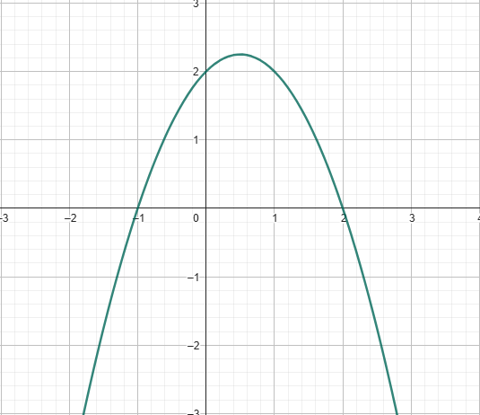
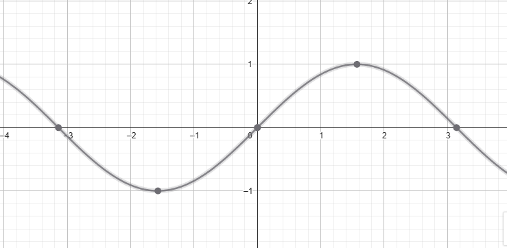

Ejemplos de Funciones para Límites
Función 1: Polinomio
f(x) = -x² + x + 2
- Dominio: x ∈ ℝ
- Límites: lim x→∞ f(x) = -∞, lim x→-∞ f(x) = -∞
- Conjunto positivo: -1 < x < 2
- Conjunto negativo: x < -1 o x > 2
- Intersección con eje y: f(0) = 2
- Raíces: x = -1, x = 2
Función 2: Hipérbola
g(x) = 6 / (x - 3)
- Dominio: x ∈ ℝ, x ≠ 3
- Límites: lim x→3⁻ g(x) = -∞, lim x→3⁺ g(x) = ∞, lim x→∞ g(x) = 0, lim x→-∞ g(x) = 0
- Conjunto positivo: x > 3
- Conjunto negativo: x < 3
- Intersección con eje y: g(0) = -2
- Raíces: no tiene
Función 3: Hipérbola desplazada
h(x) = -4 / (x + 2)
- Dominio: x ∈ ℝ, x ≠ -2
- Límites: lim x→-2⁻ h(x) = ∞, lim x→-2⁺ h(x) = -∞
- Conjunto positivo: x < -2
- Conjunto negativo: x > -2
- Intersección con eje y: h(0) = -2
- Raíces: no tiene
Función 4: Lineal
k(x) = 2x + 1
- Dominio: x ∈ ℝ
- Límites: lim x→∞ k(x) = ∞, lim x→-∞ k(x) = -∞
- Conjunto positivo: x > -0.5
- Conjunto negativo: x < -0.5
- Intersección con eje y: k(0) = 1
- Raíces: x = -0.5
Función 5: Racional
m(x) = (x² - 1) / (x - 1)
- Dominio: x ∈ ℝ, x ≠ 1
- Límites: lim x→1 m(x) = 2
- Conjunto positivo: x > -1
- Conjunto negativo: x < -1
- Intersección con eje y: m(0) = -1
- Raíces: x = -1
Función 6: Oscilante
p(x) = sin(x)
- Dominio: x ∈ ℝ
- Límites: lim x→∞ p(x) no existe, lim x→-∞ p(x) no existe
- Conjunto positivo: intervals donde sin(x) > 0 → (0, π), (2π, 3π), …
- Conjunto negativo: intervals donde sin(x) < 0 → (π, 2π), (3π, 4π), …
- Intersección con eje y: p(0) = 0
- Raíces: x = nπ, n ∈ ℤ
Función 7: Combinados
f(x) = -x² + x + 2 (verde)
- Dominio: x ∈ ℝ
- Límites: lim x→∞ f(x) = -∞, lim x→-∞ f(x) = -∞
- Conjunto positivo: -1 < x < 2
- Conjunto negativo: x < -1 o x > 2
- Intersección con eje y: f(0) = 2
- Raíces: x = -1, x = 2
g(x) = 6 / (x - 3) (negra)
- Dominio: x ∈ ℝ, x ≠ 3
- Límites: lim x→3⁻ g(x) = -∞, lim x→3⁺ g(x) = ∞, lim x→∞ g(x) = 0, lim x→-∞ g(x) = 0
- Conjunto positivo: x > 3
- Conjunto negativo: x < 3
- Intersección con eje y: g(0) = -2
- Raíces: no tiene
h(x) = -4 / (x + 2) (morada)
- Dominio: x ∈ ℝ, x ≠ -2
- Límites: lim x→-2⁻ h(x) = ∞, lim x→-2⁺ h(x) = -∞
- Conjunto positivo: x < -2
- Conjunto negativo: x > -2
- Intersección con eje y: h(0) = -2
- Raíces: no tiene
y = 2x + ? (azul)
- Dominio: x ∈ ℝ
- Límites: lim x→∞ y = ∞, lim x→-∞ y = -∞
- Conjunto positivo: x > -? / 2
- Conjunto negativo: x < -? / 2
- Intersección con eje y: y(0) = ?
- Raíces: x = -? / 2